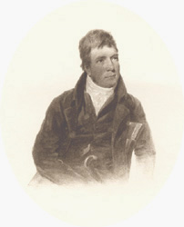

|
|
||||
|
|
Home | Corson Collection | Biography | Works | Image Collection | Recent Publications | Correspondence | Forthcoming Events | Links | E-texts | Contact William Nicholson's Portraits of Sir Walter Scott (1816-17)William Nicholson painted at least three watercolour portraits of Scott. Varying only slightly, these presumably stem from the same sitting, of which, unfortunately, no record remains. The most detailed version was exhibited in Edinburgh 1816. It shows Scott in three-quarter face turned to the left. Seated on a chair, he wears a black coat and waistcoat, with white shirt and neckcloth. Scott's dog Maida, who was acquired in April 1816, sits in the foreground. In the background, there are targes and a curtain. This painting remained in the hands of Nicholson's descendants until 1932 when it was purchased by the Scottish National Portrait Gallery. The Gallery also owns a variant in pencil and watercolour purchased from the descendents of Scott's friend William Erskine, Lord Kinedder, in 1928. Although this picture bears no date, it appears to have been obtained by Erskine in 1817. This version omits Maida. As a consequence, Scott's left arm dangles over the back of the chair, the lower part of his waistcoat is altered, his right arm is lowered so that the hand is no longer shown, and the background is blank. A very similar version from the collection of Lord Young, entirely in watercolour, was exhibited at the R.S.A. in 1880. Its current location is unknown. The Dictionary of National Biography states that a further variant is to be found at Abbotsford, but Francis Russell could find no trace of it. None of these portraits appears ever to have been engraved. Click on the thumbnail, above right, however, to see a photogravure of the Erskine Family variant, published in an American edition of Lockhart's Life (1902).
BibliographyIn addition to the source below, this page draws on unpublished research by James C. Corson.
Last updated: 10-June-2005
|
|||